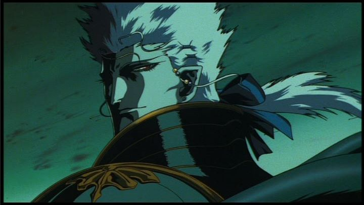

"Vampire Hunter D" has a long legacy in written novels, and also a "classic" anime film of the same name from 1985. Curiously, most fans seem to better remember the second film, not the first. "Vampire Hunter D - Bloodlust" was released in the year 2000, and a rare example of an anime being released theatrically in America before Japan, with the English dub being the official language of the movie. Around the year 2000, the Internet was becoming more acceptable as a means of discovering anime from outside the USA, DVD's were replacing home video with better options of subtitles, and the influencial American film "The Matrix" was released in 1999, with clear influences from anime. Anime was becoming cool, and "Bloodlust" was released at just the right time.Aside from holding up better than the aging first film, "Bloodlust" isn't just a good representation of the "D" franchise, but is a good vampire and action film in general. It's not absolutely exceptional, and still suffers from age, but earns its value as a classic action film.The biggest change probably comes from Studio Madhouse animating this film and not the first. Both Madhouse and the director Yoshiaki Kawajiri were best known at the time for the film "Ninja Scroll," and "Bloodlust" definitely feels like a spiritual successor, both in story and visual design. Fans will also recognize some similarities in design to one of the shorts in "The Animatrix" anthology. It isn't as faithful as the first film to Yoshitaka Amano's original illustrations, but the change reflects better in motion. Generally, animation is fluid, an impressive benchmark for the year 2000, even if certain shortcuts are more noticable against modern anime. The character designs are also a bit lanky with their tight-fitting clothing, but again, monster designs and violence is a highlight. Generally, this is a very fine-looking movie, even today: it's aged, but not past the point of enjoyment.The plot has D, a vampire hunter (and half-vampire himself), hired again to save a maiden bewitched by a vampire. D is a bit colder this time around ("... but $10 million is not enough..."), not quite as kind, seeing this as a job and nothing more. But the rich family hiring him also hired a band of mercenaries to act separately, not risking the chance to have one party fail. The mercenaries are generally not mean-spirited, even against D, and after some friendly competition they find themselves working together at key moments. In addition to this dynamic is another one: Charlotte, the girl kidnapped, may have affections for Meier, the vampire that took her. Did Meier convert her into a vampire already? Is he controlling her? Does he have ill-intentions, or is he genuinely lonely? Is it possible Charlotte has really fallen in love of her own will? It's surprisingly deep, even if only to setup a series of villains with random powers that attack the group.  Despite looking good and having a decent story, I felt the movie dragged on a bit, taking a bit too much time for most of it's scenes. Slow pacing might have been improved if the film was cut to under 90 minutes instead of 105. Music is good, but not especially memorable... it's sort of just there, even less impressive than the score from the original film. And even though the English dub was a factor early in production (and the script is actually fairly good), the acting is fairly poor, and no Japanese option exsits on the most recent American release. I don't know that we'll ever get a better adaption than "Vampire Hunter D - Bloodlust." And as important as the series is, that alone makes this an important movie. That by itself shouldn't be a reason to see a movie, and in this case, it isn't. If you aren't adverse to seeing an older anime film, this is one of the more interesting ones to choose, and is one of the better animated movies about vampires you can see, period. This is gothic horror and romance in it's truest form.
- "Ani" More reviews can be found at : https://2danicritic.github.io/ Previous review: review_Vampire_Hunter_D Next review: review_Voices_of_a_Distant_Star